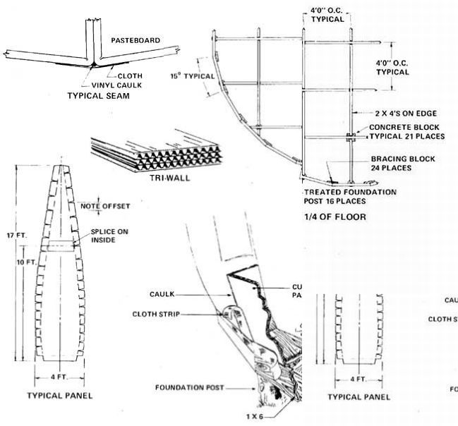

These photos show various details of the cardboard dome's construction. Each of the 24 main pasteboard wall panels was made in two sections and spliced together. The dwelling's floor- which measures 24 feet across-consists of a 2 X 4 beamwork grid sitting atop concrete blocks and treated posts. During construction, the clamped and glued ""ribs "" were fastened to a central pylon which was removed after most of the panels were up and standing. Last item to be built: the small, strongly framed door.